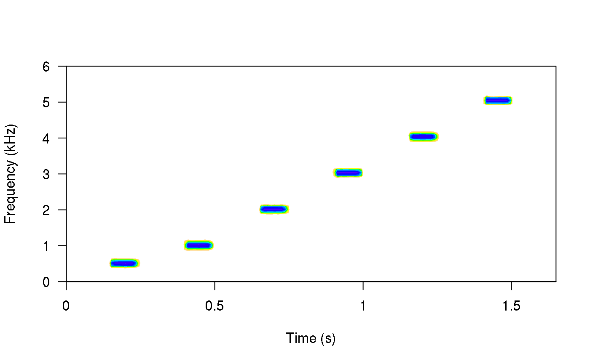
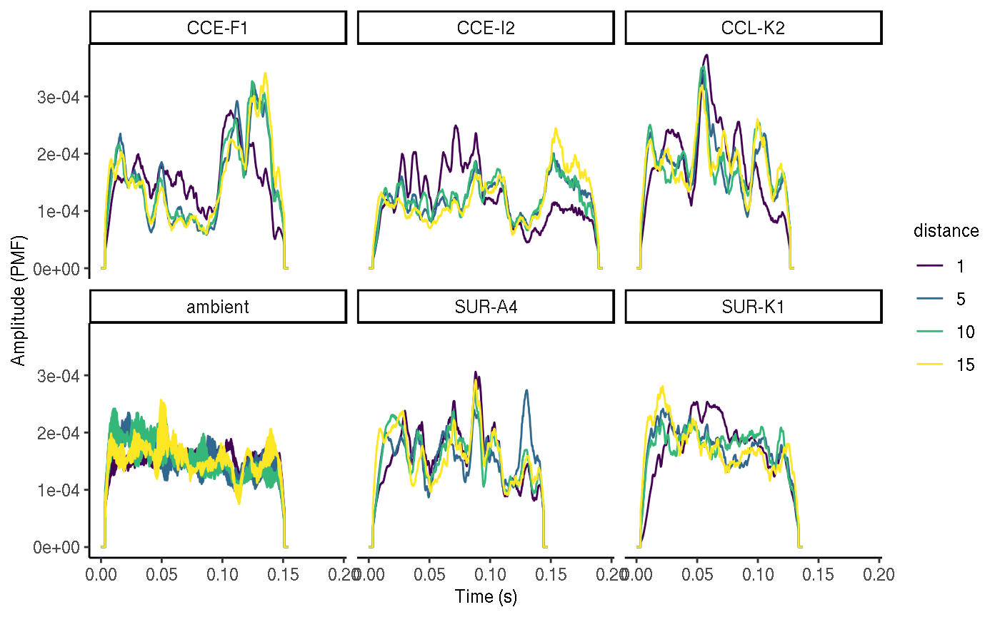
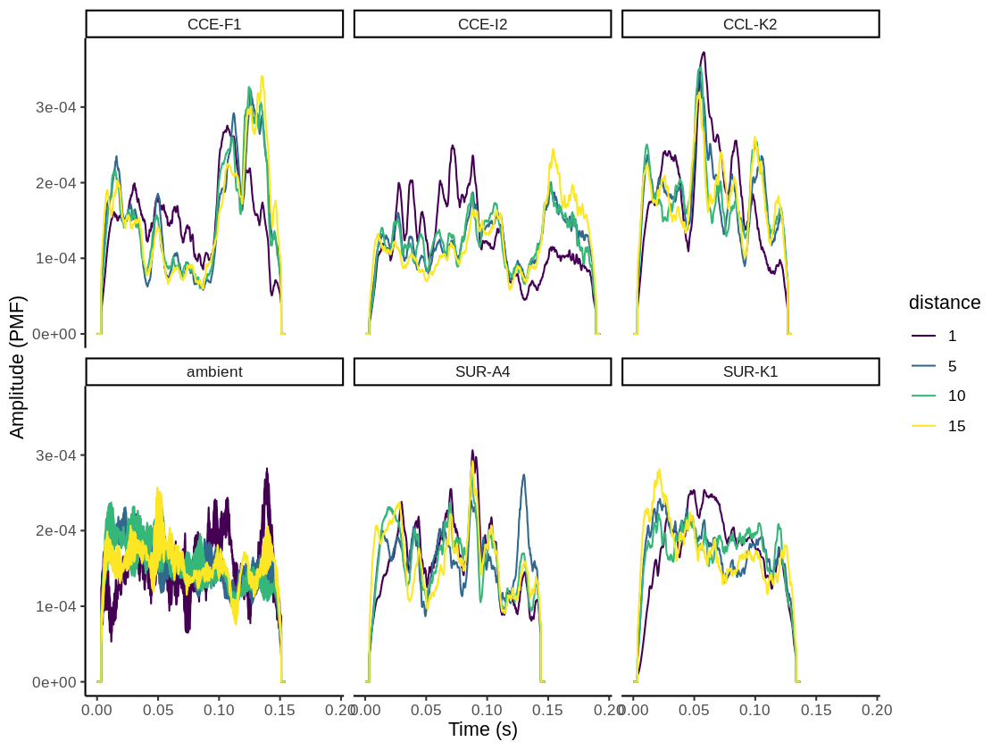

baRulho
Quantifying (animal) acoustic signal transmission and degradation
Marcelo Araya-Salas, PhD
“2020-01-09”
Source: vignettes/baRulho_quantifying_sound_degradation.Rmd
baRulho_quantifying_sound_degradation.Rmd
The baRulho package is intended to facilitate acoustic analysis of (animal) sound transmission experiments. Such studies typically aim to quantify changes in signal structure when transmitted in a given habitat by broadcasting and re-recording animal sounds at increasing distances. We will refer to these changes in signal structure ‘degradation’ for the sake of simplicity. The package offers a workflow with functions to prepare the data set for analysis as well as calculate and visualize several degradation metrics. baRulho builds upon functions and data formats from the warbleR and seewave packages, so some experience with these packages is advised.
The main features of the package are:
- The use of loops to apply tasks through acoustic signals referenced in a selection table
- The production of image files with spectrograms that let users verify acoustic analyzes
- The use extended selection tables as the object format to input acoustic data and annotations (except for ‘atmospheric_attenuation()’) and to output results
- The use of parallelization to distribute tasks among several cores to improve computational efficiency
The package can be install/load from CRAN as follows:
To install the latest developmental version from github you will need the R package devtools:
# From github
devtools::install_github("maRce10/baRulho")
#load package
library(baRulho)
# also set a working directory, for this example we will use a temporary directory
td <- tempdir()We will also need a few more packages:
## Loading required package: viridisLiteInputting acoustic data and annotations
The package requires the data to be input as extended selection tables. An extended selection table is an object class in R that contains both the annotations (locations of signals in time and frequency) and the corresponding acoustic data as ‘wave’ objects. Therefore, these are self-contained objects since the original sound files are no longer needed to perform acoustic analyses. This objects are created by the selection_table() function from warbleR. Take a look at the intro to warbleR vignette for more details.
Glossary
Reference signal: signal to use as a pattern to compare against. Usually created by re-recording a model signal broadcast at 1 m from the source (speaker).
Signal type: signal category. For instance song types (e.g. A, B, C), call types (alert, foraging, etc).
Ambient noise: energy from background sounds in the recording, excluding signals of interest.
Test signal: signals re-recorded far from the source to test for transmission/degradation (also refer to as ‘re-recorded’ signals).
Degradation: term use to describe any changes in the structure of a signal when transmitted in a given habitat.
Workflow of sound processing and analysis
A common sequence of steps to experimentally test hypotheses related to signal transmission is depicted in the following diagram:

baRulho offers functions for critical steps in this workflow (those in black, including ‘checks’) that required acoustic data manipulation and analysis. Additional functions from warbleR can be also used to complement functions in baRulho. The tools available in this package will be presented following the above workflow.
Synthetizing sounds
In some cases we want to figure out how transmission properties vary across a range of frequencies. For instance, Tobias et al (2010) studied whether acoustic adaptation (a especial case of sensory drive, Morton 1975), could explain song evolution in Amazonian avian communities. To test this the authors created synthetic pure tone sounds that were used as playbacks and re-recorded in different habitats. This is the actual procedure of creating synthetic souds as they described it: " Tones were synthesized at six different frequencies (0.5, 1.0, 2.0, 3.0, 4.0, and 5.0 kHz) to encompass the range of maximum avian auditory sensitivity (Dooling 1982). At each frequency, we generated two sequences of two 100-msec tones. One sequence had a relatively short interval of 150 msec, close to the mean internote interval in our sample (152± 74 msec). The other se-quence had a longer interval of 250 msec, close to the mean max-imum internote interval in our sample (283± 74 msec). The first sequence reflects a fast-paced song and the second a slower paced song (sensu Slabbekoorn et al. 2007). The master file (44100 Hz/16 bit WAV) thereby consisted of a series of 12 pairs of artifi-cial 100-ms constant-frequency tones at six different frequencies (0.5, 1.0, 2.0, 3.0, 4.0, and 5.0 kHz)."
We can synthesize a similar master sound file using the function sim_songs() from the package warbleR. The function requires 1) the number of tones to synthesize (argument n), 2) the duration of the tones (durs, in s), 3) the duration of the intervals (gaps, in s) and 3) the frequencies for each tone to be synthesized (freqs, in kHz). In addition, the argument diff_fun should be set to “pure.tone” and he argument harm to 1 to remove harmonics. In our case we need six tones of 100 ms at 0.5, 1, 2, 3, 4, and 5 kHz separated by intervals of 150 ms (at least for the first synthetic file described in Tobias et al 2010). We can also get a selection table (sensu warbleR) with the information about the time and frequency location of every sound. This would be required in order to make the master sound file. To get the selection table we need to set the argument selec_table = TRUE. This can be synthesize as follows:
synth.l <- sim_songs(n = 6, durs = 0.1, freqs = c(0.5, 1:5), harms = 1, gaps = 0.15,
diff.fun = "pure.tone", selec.table = TRUE, path = td)
spectro(synth.l$wave, scale = FALSE, palette = reverse.topo.colors, grid = FALSE, flim = c(0,6), collevels = seq(-20, 0, 1))
The function returns a list in which the first element is the selection table and the second one the wave object:
## [1] "list"## [1] "selec.table" "wave"## NULLkbl <- kable(synth.l$selec_table, align = "c", row.names = F, format = "html", escape = F)
kbl <- kable_styling(kbl, bootstrap_options = "striped", font_size = 14)
kbl| sound.files | selec | start | end | bottom.freq | top.freq |
|---|---|---|---|---|---|
| 2020-01-09_17:00:50.wav | 1 | 0.15 | 0.25 | 0.5 | 0.5 |
| 2020-01-09_17:00:50.wav | 2 | 0.40 | 0.50 | 1.0 | 1.0 |
| 2020-01-09_17:00:50.wav | 3 | 0.65 | 0.75 | 2.0 | 2.0 |
| 2020-01-09_17:00:50.wav | 4 | 0.90 | 1.00 | 3.0 | 3.0 |
| 2020-01-09_17:00:50.wav | 5 | 1.15 | 1.25 | 4.0 | 4.0 |
| 2020-01-09_17:00:50.wav | 6 | 1.40 | 1.50 | 5.0 | 5.0 |
The function also saves the associated ‘.wav’ file in the working directory (in this example tempdir()).
Create master sound file for playback
The function master_sound_file() creates a master sound file (as you probably guessed) for playback experiments. The function takes wave objects from an extended selection table containing the model signals and concatenates them in a single sound file (with some silence in between signals which length can be modified). master_sound_file() adds acoustic markers at the start and end of the playback that can be used to time-sync re-recorded signals, which streamlines quantification of acoustic degradation. The following example shows how to create a master sound file using the synthetic sounds generated above. For the synthetic sounds we need to add a little space between the top and bottom frequency because sim_songs() make those values the same for pure tones:
# extract selection table
st <- synth.l$selec.table
# add freq range (0.5 kHz)
st$bottom.freq <- st$bottom.freq - 0.25
st$top.freq <- st$top.freq + 0.25
# make an extended selection table
synth.est <- selection_table(X = st, extended = TRUE, pb = FALSE,
confirm.extended = FALSE, path = td)
# create master sound file
synth.master.sf <- master_sound_file(X = synth.est, file.name = "synthetic_master",
dest.path = td, gap.duration = 0.15)
The function saves the master sound file as a wave file and returns a selection table in the R environment with the time and frequency ‘coordinates’ of the signals in the file. We can look at the spectrogram of the output file using the warbleR function spectrograms() as follows:
spectrograms(synth.master.sf, path = td, by.song = "sound.files",
xl = 3, collevels = seq(-60, 0, 5))
The function can also create a master sound file from sounds from different sounds files, as is likely the case with recordings collected in the field. The following example shows how to create a master sound file using several sound files. The code uses the example data and recordings from the package warbleR:
# load example data from warbleR
data(list = c("Phae.long1", "Phae.long2", "Phae.long3", "Phae.long4",
"lbh_selec_table"))
# save sound files to temporary folder
writeWave(Phae.long1, file.path(td, "Phae.long1.wav"))
writeWave(Phae.long2, file.path(td, "Phae.long2.wav"))
writeWave(Phae.long3, file.path(td, "Phae.long3.wav"))
writeWave(Phae.long4, file.path(td, "Phae.long4.wav"))
# make an extended selection table
est <- selection_table(X = lbh_selec_table, extended = TRUE, confirm.extended = FALSE,
path = td)
# create master sound file
master.sf <- master_sound_file(X = est, file.name = "example_master",
dest.path = td, gap.duration = 0.3)
Again, we can look at the spectrogram of the output file:

Note that the output could also be explored in Raven sound analysis software (Cornell Lab of Ornithology) using the function exp_raven() from the Rraven package. exp_raven() exports selections in the R environment to a ‘.txt’ file that can be read in Raven:
Both sound files and annotations can be visualized in Raven:

Take a look at the Rraven vignette for more details.
Time sync re-recorded sounds
Once we went to the field (or lab) and re-recorded the master sound files at different distances, we are ready to start with data analysis. The first step for getting the data ready for analysis involves finding signals within the re-recorded sound files. First, need align the start marker between the master playback and the re-recorded sound files, as the time difference between the marker and the signals should be the same in both cases. To find the location of the start marker we can use the warbleR functions xcorr() to run a cross-correlation of the marker across the re-recorded sound file and find_peaks() to determine the exact time in which the marker is found. See an example of how this works below (check warbleR documentation for more information on how this functions work):
# create a matrix that contains the selection/files to be cross-correlated
comp_mat <- matrix(c(paste(master.sf$sound.files[1], master.sf$selec[1], sep = "-"), "example_master.wav"),nrow = 1)
# run cross correlation
xc <- xcorr(master.sf, compare.matrix = comp_mat, wl = 300, ovlp = 30, path = td, output = "list")
# find peaks
pks <- find_peaks(xc.output = xc, max.peak = TRUE, path = td)
| sound.files | selec | start | end | template | time | score |
|---|---|---|---|---|---|---|
| example_master.wav | 1 | 0.9999883 | 1.998655 | example_master.wav-1 | 1.499322 | 0.9452399 |
The output of find_peaks() indicate that the start marker is found starting at ~1 s (0.9999883 s), which was expected as master_sound_file() inserts a 1 second silence at the beginning of the master sound file. With this information we can infer the position of all other selections in the new recordings. The start of all signals in the re-recorded file can be calculated as the time difference between the start marker and each signal in the master sound file plus the start of the marker in the new file. Something like this:
# start on new recording
new.start <- master.sf$start[!master.sf$orig.sound.file %in% c("start_marker", "end_marker")] - master.sf$start[1] + pks$start[1]
new.start ## [1] 2.298655 2.771722 3.234833 3.709811 4.142433 4.568611 4.999855 5.430077
## [9] 5.861322 6.306788 6.751011The end of the signals would be their duration plus the start we just calculated:
# get duration
durs <- master.sf$end[!master.sf$orig.sound.file %in% c("start_marker", "end_marker")] - master.sf$start[!master.sf$orig.sound.file %in% c("start_marker", "end_marker")]
new.end <- new.start + durs
new.end## [1] 2.471722 2.934833 3.409811 3.842433 4.268611 4.699855 5.130077 5.561321
## [9] 6.006789 6.451010 6.896167These is all the data we need to create a new selection table that will allow us to measure acoustic parameters on re-recorded signals. The new selection table can be put together as follows:
# get subset exclufing markers
new.st <- master.sf[!master.sf$orig.sound.file %in% c("start_marker", "end_marker"), ]
# fix time columns
new.st$start <- new.start
new.st$end <- new.end
# add distance column
new.st$distance <- 5
# make it an extended selection table
new.est <- selection_table(new.st, extended = TRUE, confirm.extended = FALSE, by.song = "sound.files", path = td)
new.est| sound.files | selec | start | end | bottom.freq | top.freq | orig.sound.file | distance |
|---|---|---|---|---|---|---|---|
| example_master.wav | 2 | 2.298667 | 2.471733 | 2.220105 | 8.604378 | Phae.long1.wav_1 | 5 |
| example_master.wav | 3 | 2.771733 | 2.934844 | 2.169437 | 8.807053 | Phae.long1.wav_2 | 5 |
| example_master.wav | 4 | 3.234844 | 3.409822 | 2.218294 | 8.756604 | Phae.long1.wav_3 | 5 |
| example_master.wav | 5 | 3.709822 | 3.842444 | 2.316862 | 8.822316 | Phae.long2.wav_1 | 5 |
| example_master.wav | 6 | 4.142444 | 4.268622 | 2.284006 | 8.888027 | Phae.long2.wav_2 | 5 |
| example_master.wav | 7 | 4.568622 | 4.699867 | 3.006834 | 8.822316 | Phae.long3.wav_1 | 5 |
| example_master.wav | 8 | 4.999867 | 5.130089 | 2.776843 | 8.888027 | Phae.long3.wav_2 | 5 |
| example_master.wav | 9 | 5.430089 | 5.561333 | 2.316862 | 9.315153 | Phae.long3.wav_3 | 5 |
| example_master.wav | 10 | 5.861333 | 6.006800 | 2.513997 | 9.216586 | Phae.long4.wav_1 | 5 |
| example_master.wav | 11 | 6.306800 | 6.451022 | 2.579708 | 10.235116 | Phae.long4.wav_2 | 5 |
| example_master.wav | 12 | 6.751022 | 6.896178 | 2.579708 | 9.742279 | Phae.long4.wav_3 | 5 |
Note that we also added column for “distance” that will be useful for downsteam analysis (and to keep track of the distance in which the signals were re-recorded!). In addition, the data was converted into an extended_selection_table, which is the data format that pretty much all baRulho functions can take.
This is somewhat a silly example as we are finding the star marker on the original master sound file. However, it demonstrates how this can be done on any re-recorded sound file.
When this process is done manually (or when broadcasting devices add some short delays as the case of some bluetooth transmitters) there could be some small misalignment between the inferred versus the actual start time of re-recorded signals. This is problematic for quantifying degradation in baRulho (and other sound analysis software) as precise alignment of signal is crucial for the accuracy of downstream measures of signal degradation.
Misalignment can be fixed with the funciton spcc_align(). This function uses spectrographic cross-correlation to sync the position in time of signals with regard to a reference signal. spcc_align() takes the signal recorded at the closest distance to the source as the reference signal. The function calls warbleR’s xcorr() and find_peaks() (just as we did above) internally to align signals using cross-correlation.
baRulho comes with an example data set called playback_est_unaligned, which contains signals in which the time position of signals is slightly unaligned. We can use this data to show how the function spcc_align():
data("playback_est_unaligned")
# method 1
playback_est_aligned <- spcc_align(X = playback_est_unaligned)The output extended selection table contains the new start and end values after alignment.
This is how the signals look before and after being aligned:
# rename sound files so aligned and unaligned signals are intercalated
unalg <- rename_waves_est(playback_est_unaligned, playback_est_unaligned$sound.files, new.selec = seq(1, 200, by = 2)[1:nrow(W)])
alg <- rename_waves_est(playback_est_aligned, playback_est_aligned$sound.files, new.selec = seq(2, 200, by = 2)[1:nrow(xa)])
# add label
unalg$type <- "Before aligning"
alg$type <- "After aligning"
# put together in a single ext sel tab
unalg.alg <- rbind(unalg, alg)
# create spectrograms
spectrograms(unalg.alg[unalg.alg$signal.type != "ambient", ], dest.path = tempdir(), res = 100, wl = 300, title.labels = "type", sel.labels = NULL)
In case this doesn’t work as expected there is a plan B. The function seltailor() from warbleR allows user to manually adjust the start and end of signals in a extended selection table.
Quantifying signal degradation
Most baRulho functions are design to quantify acoustic signal degradation. There are a few important things to keep in mind about functions for quantifying degradation:
- The package currently assumes that all recordings have been made with the same equipment and recording volume. This will be modified in future versions to allow for amplitude calibration of recordings.
- Wave envelope and frequency spectrum calculations are made after applying a bandpass filter within the frequency range of the reference signal (‘bottom.freq’ and ‘top.freq’ columns)
- The package offers two methods to compare signals to the reference:
- Compare all signals with the counterpart that was recorded at the closest distance to source (e.g. compare a signal recorded at 5m, 10m and 15m with its counterpart recorded at 1m). This is the default method.
- Compare all signals with the counterpart recorded at the distance immediately before (e.g. a signal recorded at 10m compared with the one recorded at 5m, then signal recorded at 15m compared with the one recorded at 10m and so on).
Required data structure
As mentioned above the data must be inputted in the extended_selection_table format. The data should also contain some additional information. baRulho comes with an example extended_selection_table data set that can be used to understand the required data structure:
| sound.files | selec | start | end | bottom.freq | top.freq | signal.type | distance |
|---|---|---|---|---|---|---|---|
| 01m_re-rec.wav | 1 | 0.0500000 | 0.2072789 | 2.238685 | 11.58918 | CCE-F1 | 1 |
| 05m_re-rec.wav | 1 | 0.0444060 | 0.2016849 | 2.238685 | 11.58918 | CCE-F1 | 5 |
| 10m_re-rec.wav | 1 | 0.0420688 | 0.1993477 | 2.238685 | 11.58918 | CCE-F1 | 10 |
| 15m_re-rec.wav | 1 | 0.0420688 | 0.1993477 | 2.238685 | 11.58918 | CCE-F1 | 15 |
| 01m_re-rec.wav | 4 | 1.0500000 | 1.2444898 | 1.544095 | 10.89459 | CCE-I2 | 1 |
| 05m_re-rec.wav | 4 | 1.0465092 | 1.2409990 | 1.544095 | 10.89459 | CCE-I2 | 5 |
| 10m_re-rec.wav | 4 | 1.0418547 | 1.2363445 | 1.544095 | 10.89459 | CCE-I2 | 10 |
| 15m_re-rec.wav | 4 | 1.0418547 | 1.2363445 | 1.544095 | 10.89459 | CCE-I2 | 15 |
| 01m_re-rec.wav | 5 | 1.5500000 | 1.6814512 | 2.376997 | 11.72750 | CCL-K2 | 1 |
| 05m_re-rec.wav | 5 | 1.5482417 | 1.6796930 | 2.376997 | 11.72750 | CCL-K2 | 5 |
| 10m_re-rec.wav | 5 | 1.5423809 | 1.6738321 | 2.376997 | 11.72750 | CCL-K2 | 10 |
| 15m_re-rec.wav | 5 | 1.5423809 | 1.6738321 | 2.376997 | 11.72750 | CCL-K2 | 15 |
| 01m_re-rec.wav | 3 | 0.7980000 | 0.9552789 | 2.238685 | 11.58918 | ambient | 1 |
| 05m_re-rec.wav | 3 | 0.7980000 | 0.9552789 | 2.238685 | 11.58918 | ambient | 5 |
| 10m_re-rec.wav | 3 | 0.7980000 | 0.9552789 | 2.238685 | 11.58918 | ambient | 10 |
| 15m_re-rec.wav | 3 | 0.7980000 | 0.9552789 | 2.238685 | 11.58918 | ambient | 15 |
| 01m_re-rec.wav | 6 | 1.7650000 | 1.9222789 | 2.238685 | 11.58918 | ambient | 1 |
| 05m_re-rec.wav | 6 | 1.7650000 | 1.9222789 | 2.238685 | 11.58918 | ambient | 5 |
| 10m_re-rec.wav | 6 | 1.7650000 | 1.9222789 | 2.238685 | 11.58918 | ambient | 10 |
| 15m_re-rec.wav | 6 | 1.7650000 | 1.9222789 | 2.238685 | 11.58918 | ambient | 15 |
| 01m_re-rec.wav | 2 | 0.5500000 | 0.7000680 | 1.743639 | 11.09414 | SUR-A4 | 1 |
| 05m_re-rec.wav | 2 | 0.5464984 | 0.6965664 | 1.743639 | 11.09414 | SUR-A4 | 5 |
| 10m_re-rec.wav | 2 | 0.5418296 | 0.6918977 | 1.743639 | 11.09414 | SUR-A4 | 10 |
| 15m_re-rec.wav | 2 | 0.5418296 | 0.6918977 | 1.743639 | 11.09414 | SUR-A4 | 15 |
| 01m_re-rec.wav | 7 | 2.0499773 | 2.1885488 | 2.030939 | 11.38144 | SUR-K1 | 1 |
| 05m_re-rec.wav | 7 | 2.0494093 | 2.1879808 | 2.030939 | 11.38144 | SUR-K1 | 5 |
| 10m_re-rec.wav | 7 | 2.0423533 | 2.1809248 | 2.030939 | 11.38144 | SUR-K1 | 10 |
| 15m_re-rec.wav | 7 | 2.0423533 | 2.1809248 | 2.030939 | 11.38144 | SUR-K1 | 15 |
Note that besides the basic acoustic annotation information (e.g. sound file, time, frequency) the table also contains a ‘signal.type’ column, which refers to the signal type from which each signal belongs to, and a ‘distance’ column that refers to the distance from the source at which each signal was recorded. Signal type and distance are required for the comparison of signals. Also note that some selections are labeled as “ambient” in the ‘signal.type’. These selections refer to ambient (background) noise. Ambient noise can be used by some functions to correct for amplitude differences due to non-target sounds.
In this example data there are 4 recordings at increasing distances: 1m, 5m, 10m and 15m:
## [1] "01m_re-rec.wav" "05m_re-rec.wav" "10m_re-rec.wav" "15m_re-rec.wav"The data contains selections for 5 signal types as wel as 2 ambient noise selections at each distance/recording:
| 1 | 5 | 10 | 15 | |
|---|---|---|---|---|
| ambient | 2 | 2 | 2 | 2 |
| CCE-F1 | 1 | 1 | 1 | 1 |
| CCE-I2 | 1 | 1 | 1 | 1 |
| CCL-K2 | 1 | 1 | 1 | 1 |
| SUR-A4 | 1 | 1 | 1 | 1 |
| SUR-K1 | 1 | 1 | 1 | 1 |
Degradation measurements
Blur ratio
Blur ratio quantifies the degradation of sound as a function of the change in signal energy in the time domain as described by Dabelsteen et al (1993). Blur ratio is measured as the mismatch between amplitude envelopes (expressed as probability density functions) of the reference signal and the re-recorded signal. Low values indicate low degradation of signals. The function blur_ratio() measures the blur ratio of signals in which a reference playback has been re-recorded at different distances. The function compares each signal type to the corresponding reference signal within the supplied frequency range (e.g. bandpass) of the reference signal (‘bottom.freq’ and ‘top.freq’ columns in ‘X’). The ‘signal.type’ column must be used to tell the function to only compare signals belonging to the same category (e.g. song-types). All wave objects in the extended selection table must have the same sampling rate so the length of envelopes is comparable. Blur ratio can be calculated as follows:
# run blur ratio
br <- blur_ratio(playback_est, method = 1, pb = FALSE)
# check output class
is_extended_selection_table(br)## [1] TRUE| sound.files | selec | start | end | bottom.freq | top.freq | signal.type | distance | reference | blur.ratio |
|---|---|---|---|---|---|---|---|---|---|
| 01m_re-rec.wav | 1 | 0.0500000 | 0.2072789 | 2.238685 | 11.58918 | CCE-F1 | 1 | 01m_re-rec.wav-1 | NA |
| 05m_re-rec.wav | 1 | 0.0444060 | 0.2016849 | 2.238685 | 11.58918 | CCE-F1 | 5 | 01m_re-rec.wav-1 | 0.1697598 |
| 10m_re-rec.wav | 1 | 0.0420688 | 0.1993477 | 2.238685 | 11.58918 | CCE-F1 | 10 | 01m_re-rec.wav-1 | 0.1550627 |
| 15m_re-rec.wav | 1 | 0.0420688 | 0.1993477 | 2.238685 | 11.58918 | CCE-F1 | 15 | 01m_re-rec.wav-1 | 0.1879170 |
| 01m_re-rec.wav | 4 | 1.0500000 | 1.2444898 | 1.544095 | 10.89459 | CCE-I2 | 1 | 01m_re-rec.wav-4 | NA |
| 05m_re-rec.wav | 4 | 1.0465092 | 1.2409990 | 1.544095 | 10.89459 | CCE-I2 | 5 | 01m_re-rec.wav-4 | 0.1636087 |
| 10m_re-rec.wav | 4 | 1.0418547 | 1.2363445 | 1.544095 | 10.89459 | CCE-I2 | 10 | 01m_re-rec.wav-4 | 0.1622788 |
| 15m_re-rec.wav | 4 | 1.0418547 | 1.2363445 | 1.544095 | 10.89459 | CCE-I2 | 15 | 01m_re-rec.wav-4 | 0.2163466 |
| 01m_re-rec.wav | 5 | 1.5500000 | 1.6814512 | 2.376997 | 11.72750 | CCL-K2 | 1 | 01m_re-rec.wav-5 | NA |
| 05m_re-rec.wav | 5 | 1.5482417 | 1.6796930 | 2.376997 | 11.72750 | CCL-K2 | 5 | 01m_re-rec.wav-5 | 0.1338449 |
| 10m_re-rec.wav | 5 | 1.5423809 | 1.6738321 | 2.376997 | 11.72750 | CCL-K2 | 10 | 01m_re-rec.wav-5 | 0.1657100 |
| 15m_re-rec.wav | 5 | 1.5423809 | 1.6738321 | 2.376997 | 11.72750 | CCL-K2 | 15 | 01m_re-rec.wav-5 | 0.1568202 |
| 01m_re-rec.wav | 3 | 0.7980000 | 0.9552789 | 2.238685 | 11.58918 | ambient | 1 | 01m_re-rec.wav-3 | NA |
| 05m_re-rec.wav | 3 | 0.7980000 | 0.9552789 | 2.238685 | 11.58918 | ambient | 5 | 01m_re-rec.wav-3 | NA |
| 10m_re-rec.wav | 3 | 0.7980000 | 0.9552789 | 2.238685 | 11.58918 | ambient | 10 | 01m_re-rec.wav-3 | NA |
| 15m_re-rec.wav | 3 | 0.7980000 | 0.9552789 | 2.238685 | 11.58918 | ambient | 15 | 01m_re-rec.wav-3 | NA |
| 01m_re-rec.wav | 6 | 1.7650000 | 1.9222789 | 2.238685 | 11.58918 | ambient | 1 | 01m_re-rec.wav-3 | NA |
| 05m_re-rec.wav | 6 | 1.7650000 | 1.9222789 | 2.238685 | 11.58918 | ambient | 5 | 01m_re-rec.wav-3 | NA |
| 10m_re-rec.wav | 6 | 1.7650000 | 1.9222789 | 2.238685 | 11.58918 | ambient | 10 | 01m_re-rec.wav-3 | NA |
| 15m_re-rec.wav | 6 | 1.7650000 | 1.9222789 | 2.238685 | 11.58918 | ambient | 15 | 01m_re-rec.wav-3 | NA |
| 01m_re-rec.wav | 2 | 0.5500000 | 0.7000680 | 1.743639 | 11.09414 | SUR-A4 | 1 | 01m_re-rec.wav-2 | NA |
| 05m_re-rec.wav | 2 | 0.5464984 | 0.6965664 | 1.743639 | 11.09414 | SUR-A4 | 5 | 01m_re-rec.wav-2 | 0.1218016 |
| 10m_re-rec.wav | 2 | 0.5418296 | 0.6918977 | 1.743639 | 11.09414 | SUR-A4 | 10 | 01m_re-rec.wav-2 | 0.0841502 |
| 15m_re-rec.wav | 2 | 0.5418296 | 0.6918977 | 1.743639 | 11.09414 | SUR-A4 | 15 | 01m_re-rec.wav-2 | 0.0987561 |
| 01m_re-rec.wav | 7 | 2.0499773 | 2.1885488 | 2.030939 | 11.38144 | SUR-K1 | 1 | 01m_re-rec.wav-7 | NA |
| 05m_re-rec.wav | 7 | 2.0494093 | 2.1879808 | 2.030939 | 11.38144 | SUR-K1 | 5 | 01m_re-rec.wav-7 | 0.1079563 |
| 10m_re-rec.wav | 7 | 2.0423533 | 2.1809248 | 2.030939 | 11.38144 | SUR-K1 | 10 | 01m_re-rec.wav-7 | 0.0999138 |
| 15m_re-rec.wav | 7 | 2.0423533 | 2.1809248 | 2.030939 | 11.38144 | SUR-K1 | 15 | 01m_re-rec.wav-7 | 0.1447614 |
The output data frame is similar to input data, except that it includes two new columns (‘reference’ and ‘blur.ratio’) with the reference signal and blur ratio values. Note that NAs are returned for signals used as reference and ‘ambient’ noise selections.
If it also returns 1 image file (in ‘jpeg’ format) for each comparison showing spectrograms of both signals and the overlaid amplitude envelopes (as probability mass functions (PMF)).
# run blur ratio
br <- blur_ratio(playback_est, method = 1, pb = FALSE, img = TRUE, ssmooth = 300, dest.path = td)Output image files (in the working directory) look like these ones:

The image shows the spectrogram for the reference and re-recorded signal, as well as the envelopes of both signals overlaid in a single graph. Colors indicate to which signal spectrograms and envelopes belong to. The blur ratio value is also displayed.
The function can also return the amplitude spectrum contours when the argument output = "list". The contours can be directly inputted into ggplot to visualize amplitude envelopes, and how they vary with distance and across signal types (and ambient noise if included):
envs <- blur_ratio(X = playback_est, output = "list", ssmooth = 300, pb = FALSE)$envelopes
envs$distance <- as.factor(envs$distance)
ggplot(envs, aes(x= time, y = amp, col = distance)) +
geom_line() +
facet_wrap(~ signal.type) +
scale_color_manual(values = viridis(4)) +
labs(x = "Time (s)", y = "Amplitude (PMF)") +
theme_classic()
Note than the smooth argument could change envelope shapes and related measurements. The following code sets smooth = 800:
envs <- blur_ratio(X = playback_est, output = "list", ssmooth = 1000, pb = FALSE)$envelopes
envs$distance <- as.factor(envs$distance)
ggplot(envs, aes(x= time, y = amp, col = distance)) +
geom_line() +
facet_wrap(~ signal.type) +
scale_color_manual(values = viridis(4)) +
labs(x = "Time (s)", y = "Amplitude (PMF)") +
theme_classic()
Spectral blur ratio
Spectral blur ratio (measured by spectral_blur_ratio()) quantifies the degradation of sound as a function of the change in signal energy in across the frequency domain, analogous to the blur ratio described above for the time domain (and implemented in blur_ratio()). Low values also indicate low degradation of signals. Spectral blur ratio is measured as the mismatch between power spectra (expressed as probability density functions) of the reference signal and the re-recorded signal. It works in the same way than blur_ratio(), comparing each signal type to the corresponding reference signal, and the output and images are alike as well.
Spectral blur ratio can be calculated as follows:
# run Spectral blur ratio
sbr <- spectral_blur_ratio(playback_est, method = 1, pb = FALSE, img = TRUE, dest.path = td)
# check output class
is_extended_selection_table(sbr)## [1] TRUE| sound.files | selec | start | end | bottom.freq | top.freq | signal.type | distance | reference | blur.ratio.spectrum |
|---|---|---|---|---|---|---|---|---|---|
| 01m_re-rec.wav | 1 | 0.0500000 | 0.2072789 | 2.238685 | 11.58918 | CCE-F1 | 1 | 01m_re-rec.wav-1 | NA |
| 05m_re-rec.wav | 1 | 0.0444060 | 0.2016849 | 2.238685 | 11.58918 | CCE-F1 | 5 | 01m_re-rec.wav-1 | 0.2363415 |
| 10m_re-rec.wav | 1 | 0.0420688 | 0.1993477 | 2.238685 | 11.58918 | CCE-F1 | 10 | 01m_re-rec.wav-1 | 0.2104554 |
| 15m_re-rec.wav | 1 | 0.0420688 | 0.1993477 | 2.238685 | 11.58918 | CCE-F1 | 15 | 01m_re-rec.wav-1 | 0.2497076 |
| 01m_re-rec.wav | 4 | 1.0500000 | 1.2444898 | 1.544095 | 10.89459 | CCE-I2 | 1 | 01m_re-rec.wav-4 | NA |
| 05m_re-rec.wav | 4 | 1.0465092 | 1.2409990 | 1.544095 | 10.89459 | CCE-I2 | 5 | 01m_re-rec.wav-4 | 0.2018129 |
| 10m_re-rec.wav | 4 | 1.0418547 | 1.2363445 | 1.544095 | 10.89459 | CCE-I2 | 10 | 01m_re-rec.wav-4 | 0.1995004 |
| 15m_re-rec.wav | 4 | 1.0418547 | 1.2363445 | 1.544095 | 10.89459 | CCE-I2 | 15 | 01m_re-rec.wav-4 | 0.3103560 |
| 01m_re-rec.wav | 5 | 1.5500000 | 1.6814512 | 2.376997 | 11.72750 | CCL-K2 | 1 | 01m_re-rec.wav-5 | NA |
| 05m_re-rec.wav | 5 | 1.5482417 | 1.6796930 | 2.376997 | 11.72750 | CCL-K2 | 5 | 01m_re-rec.wav-5 | 0.1719630 |
| 10m_re-rec.wav | 5 | 1.5423809 | 1.6738321 | 2.376997 | 11.72750 | CCL-K2 | 10 | 01m_re-rec.wav-5 | 0.1748923 |
| 15m_re-rec.wav | 5 | 1.5423809 | 1.6738321 | 2.376997 | 11.72750 | CCL-K2 | 15 | 01m_re-rec.wav-5 | 0.2158903 |
| 01m_re-rec.wav | 3 | 0.7980000 | 0.9552789 | 2.238685 | 11.58918 | ambient | 1 | 01m_re-rec.wav-3 | NA |
| 05m_re-rec.wav | 3 | 0.7980000 | 0.9552789 | 2.238685 | 11.58918 | ambient | 5 | 01m_re-rec.wav-3 | NA |
| 10m_re-rec.wav | 3 | 0.7980000 | 0.9552789 | 2.238685 | 11.58918 | ambient | 10 | 01m_re-rec.wav-3 | NA |
| 15m_re-rec.wav | 3 | 0.7980000 | 0.9552789 | 2.238685 | 11.58918 | ambient | 15 | 01m_re-rec.wav-3 | NA |
| 01m_re-rec.wav | 6 | 1.7650000 | 1.9222789 | 2.238685 | 11.58918 | ambient | 1 | 01m_re-rec.wav-3 | NA |
| 05m_re-rec.wav | 6 | 1.7650000 | 1.9222789 | 2.238685 | 11.58918 | ambient | 5 | 01m_re-rec.wav-3 | NA |
| 10m_re-rec.wav | 6 | 1.7650000 | 1.9222789 | 2.238685 | 11.58918 | ambient | 10 | 01m_re-rec.wav-3 | NA |
| 15m_re-rec.wav | 6 | 1.7650000 | 1.9222789 | 2.238685 | 11.58918 | ambient | 15 | 01m_re-rec.wav-3 | NA |
| 01m_re-rec.wav | 2 | 0.5500000 | 0.7000680 | 1.743639 | 11.09414 | SUR-A4 | 1 | 01m_re-rec.wav-2 | NA |
| 05m_re-rec.wav | 2 | 0.5464984 | 0.6965664 | 1.743639 | 11.09414 | SUR-A4 | 5 | 01m_re-rec.wav-2 | 0.1888132 |
| 10m_re-rec.wav | 2 | 0.5418296 | 0.6918977 | 1.743639 | 11.09414 | SUR-A4 | 10 | 01m_re-rec.wav-2 | 0.1615094 |
| 15m_re-rec.wav | 2 | 0.5418296 | 0.6918977 | 1.743639 | 11.09414 | SUR-A4 | 15 | 01m_re-rec.wav-2 | 0.1642809 |
| 01m_re-rec.wav | 7 | 2.0499773 | 2.1885488 | 2.030939 | 11.38144 | SUR-K1 | 1 | 01m_re-rec.wav-7 | NA |
| 05m_re-rec.wav | 7 | 2.0494093 | 2.1879808 | 2.030939 | 11.38144 | SUR-K1 | 5 | 01m_re-rec.wav-7 | 0.1291799 |
| 10m_re-rec.wav | 7 | 2.0423533 | 2.1809248 | 2.030939 | 11.38144 | SUR-K1 | 10 | 01m_re-rec.wav-7 | 0.1495805 |
| 15m_re-rec.wav | 7 | 2.0423533 | 2.1809248 | 2.030939 | 11.38144 | SUR-K1 | 15 | 01m_re-rec.wav-7 | 0.3580191 |

As in blur_ratio(), spectral_blur_ratio() can also return the amplitude spectrum contours with the argument output = "list":
spctr <- spectral_blur_ratio(X = playback_est, output = "list", pb = FALSE)$spectra
spctr$distance <- as.factor(spctr$distance)
ggplot(spctr, aes(y = amp, x = freq, col = distance)) +
geom_line() +
facet_wrap(~ signal.type) +
scale_color_manual(values = viridis(4)) +
labs(x = "Frequency (kHz)", y = "Amplitude (PMF)") +
coord_flip() +
theme_classic()
Envelope correlation
Amplitude envelope correlation measures the similarity of two signals in the time domain. The envelope_correlation() function measures the envelope correlation coefficients between reference playback and re-recorded signals. Values close to 1 means very similar amplitude envelopes (i.e. little degradation has occurred). If envelopes have different lengths (that is when signals have different lengths) cross-correlation is applied and the maximum correlation coefficient is returned. Cross-correlation is achieved by sliding the shortest signal along the largest one and calculating the correlation at each step. As in the functions detailed above, ‘signal.type’ column must be used to instruct the function to only compare signals that belong to the same category.
envelope_correlation() can be run as follows:
# run envelope correlation
ec <- envelope_correlation(playback_est, method = 1, pb = FALSE)
# check output class
is_extended_selection_table(ec)## [1] TRUEThe output is also similar to the other functions; an extended selection table similar to input data, but also includes two new columns (‘reference’ and ‘envelope.correlation’) with the reference signal and the amplitude envelope correlation coefficients:
| sound.files | selec | start | end | bottom.freq | top.freq | signal.type | distance | reference | env.cor |
|---|---|---|---|---|---|---|---|---|---|
| 01m_re-rec.wav | 1 | 0.0500000 | 0.2072789 | 2.238685 | 11.58918 | CCE-F1 | 1 | 01m_re-rec.wav-1 | NA |
| 05m_re-rec.wav | 1 | 0.0444060 | 0.2016849 | 2.238685 | 11.58918 | CCE-F1 | 5 | 01m_re-rec.wav-1 | 0.5179751 |
| 10m_re-rec.wav | 1 | 0.0420688 | 0.1993477 | 2.238685 | 11.58918 | CCE-F1 | 10 | 01m_re-rec.wav-1 | 0.4553470 |
| 15m_re-rec.wav | 1 | 0.0420688 | 0.1993477 | 2.238685 | 11.58918 | CCE-F1 | 15 | 01m_re-rec.wav-1 | 0.3898350 |
| 01m_re-rec.wav | 4 | 1.0500000 | 1.2444898 | 1.544095 | 10.89459 | CCE-I2 | 1 | 01m_re-rec.wav-4 | NA |
| 05m_re-rec.wav | 4 | 1.0465092 | 1.2409990 | 1.544095 | 10.89459 | CCE-I2 | 5 | 01m_re-rec.wav-4 | 0.4667293 |
| 10m_re-rec.wav | 4 | 1.0418547 | 1.2363445 | 1.544095 | 10.89459 | CCE-I2 | 10 | 01m_re-rec.wav-4 | 0.3127590 |
| 15m_re-rec.wav | 4 | 1.0418547 | 1.2363445 | 1.544095 | 10.89459 | CCE-I2 | 15 | 01m_re-rec.wav-4 | 0.2023069 |
| 01m_re-rec.wav | 5 | 1.5500000 | 1.6814512 | 2.376997 | 11.72750 | CCL-K2 | 1 | 01m_re-rec.wav-5 | NA |
| 05m_re-rec.wav | 5 | 1.5482417 | 1.6796930 | 2.376997 | 11.72750 | CCL-K2 | 5 | 01m_re-rec.wav-5 | 0.5146549 |
| 10m_re-rec.wav | 5 | 1.5423809 | 1.6738321 | 2.376997 | 11.72750 | CCL-K2 | 10 | 01m_re-rec.wav-5 | 0.3961484 |
| 15m_re-rec.wav | 5 | 1.5423809 | 1.6738321 | 2.376997 | 11.72750 | CCL-K2 | 15 | 01m_re-rec.wav-5 | 0.3938664 |
| 01m_re-rec.wav | 3 | 0.7980000 | 0.9552789 | 2.238685 | 11.58918 | ambient | 1 | 01m_re-rec.wav-3 | NA |
| 05m_re-rec.wav | 3 | 0.7980000 | 0.9552789 | 2.238685 | 11.58918 | ambient | 5 | 01m_re-rec.wav-3 | 0.1191888 |
| 10m_re-rec.wav | 3 | 0.7980000 | 0.9552789 | 2.238685 | 11.58918 | ambient | 10 | 01m_re-rec.wav-3 | 0.1487636 |
| 15m_re-rec.wav | 3 | 0.7980000 | 0.9552789 | 2.238685 | 11.58918 | ambient | 15 | 01m_re-rec.wav-3 | 0.1486304 |
| 01m_re-rec.wav | 6 | 1.7650000 | 1.9222789 | 2.238685 | 11.58918 | ambient | 1 | 01m_re-rec.wav-3 | 0.1270156 |
| 05m_re-rec.wav | 6 | 1.7650000 | 1.9222789 | 2.238685 | 11.58918 | ambient | 5 | 01m_re-rec.wav-3 | 0.1219200 |
| 10m_re-rec.wav | 6 | 1.7650000 | 1.9222789 | 2.238685 | 11.58918 | ambient | 10 | 01m_re-rec.wav-3 | 0.1230631 |
| 15m_re-rec.wav | 6 | 1.7650000 | 1.9222789 | 2.238685 | 11.58918 | ambient | 15 | 01m_re-rec.wav-3 | 0.1462296 |
| 01m_re-rec.wav | 2 | 0.5500000 | 0.7000680 | 1.743639 | 11.09414 | SUR-A4 | 1 | 01m_re-rec.wav-2 | NA |
| 05m_re-rec.wav | 2 | 0.5464984 | 0.6965664 | 1.743639 | 11.09414 | SUR-A4 | 5 | 01m_re-rec.wav-2 | 0.2333373 |
| 10m_re-rec.wav | 2 | 0.5418296 | 0.6918977 | 1.743639 | 11.09414 | SUR-A4 | 10 | 01m_re-rec.wav-2 | 0.4699206 |
| 15m_re-rec.wav | 2 | 0.5418296 | 0.6918977 | 1.743639 | 11.09414 | SUR-A4 | 15 | 01m_re-rec.wav-2 | 0.7098548 |
| 01m_re-rec.wav | 7 | 2.0499773 | 2.1885488 | 2.030939 | 11.38144 | SUR-K1 | 1 | 01m_re-rec.wav-7 | NA |
| 05m_re-rec.wav | 7 | 2.0494093 | 2.1879808 | 2.030939 | 11.38144 | SUR-K1 | 5 | 01m_re-rec.wav-7 | 0.4875605 |
| 10m_re-rec.wav | 7 | 2.0423533 | 2.1809248 | 2.030939 | 11.38144 | SUR-K1 | 10 | 01m_re-rec.wav-7 | 0.5009369 |
| 15m_re-rec.wav | 7 | 2.0423533 | 2.1809248 | 2.030939 | 11.38144 | SUR-K1 | 15 | 01m_re-rec.wav-7 | 0.2480396 |
Note that this function doesn’t provide a graphical output. However, the graphs generated by blur_ratio() can be used to inspect the envelop shapes and the alignment of signals.
Spectral correlation
Spectrum correlation measures the similarity of two signals in the frequency domain. This is similar to spectral_correlation(), but no cross-correlation is applied as both signals are compared within the frequency range of the reference signal (so both spectra have the same length). Again, values near 1 indicate identical frequency spectrum (i.e. no degradation).
# run spectral correlation
sc <- spectral_correlation(playback_est, method = 1, pb = FALSE)
# check output class
is_extended_selection_table(sc)## [1] TRUEThe output is also similar to that of envelope_correlation():
| sound.files | selec | start | end | bottom.freq | top.freq | signal.type | distance | reference | spectrum.correlation |
|---|---|---|---|---|---|---|---|---|---|
| 01m_re-rec.wav | 1 | 0.0500000 | 0.2072789 | 2.238685 | 11.58918 | CCE-F1 | 1 | 01m_re-rec.wav-1 | NA |
| 05m_re-rec.wav | 1 | 0.0444060 | 0.2016849 | 2.238685 | 11.58918 | CCE-F1 | 5 | 01m_re-rec.wav-1 | 0.7608331 |
| 10m_re-rec.wav | 1 | 0.0420688 | 0.1993477 | 2.238685 | 11.58918 | CCE-F1 | 10 | 01m_re-rec.wav-1 | 0.7873469 |
| 15m_re-rec.wav | 1 | 0.0420688 | 0.1993477 | 2.238685 | 11.58918 | CCE-F1 | 15 | 01m_re-rec.wav-1 | 0.6961083 |
| 01m_re-rec.wav | 4 | 1.0500000 | 1.2444898 | 1.544095 | 10.89459 | CCE-I2 | 1 | 01m_re-rec.wav-4 | NA |
| 05m_re-rec.wav | 4 | 1.0465092 | 1.2409990 | 1.544095 | 10.89459 | CCE-I2 | 5 | 01m_re-rec.wav-4 | 0.8736818 |
| 10m_re-rec.wav | 4 | 1.0418547 | 1.2363445 | 1.544095 | 10.89459 | CCE-I2 | 10 | 01m_re-rec.wav-4 | 0.8869176 |
| 15m_re-rec.wav | 4 | 1.0418547 | 1.2363445 | 1.544095 | 10.89459 | CCE-I2 | 15 | 01m_re-rec.wav-4 | 0.7154172 |
| 01m_re-rec.wav | 5 | 1.5500000 | 1.6814512 | 2.376997 | 11.72750 | CCL-K2 | 1 | 01m_re-rec.wav-5 | NA |
| 05m_re-rec.wav | 5 | 1.5482417 | 1.6796930 | 2.376997 | 11.72750 | CCL-K2 | 5 | 01m_re-rec.wav-5 | 0.8582452 |
| 10m_re-rec.wav | 5 | 1.5423809 | 1.6738321 | 2.376997 | 11.72750 | CCL-K2 | 10 | 01m_re-rec.wav-5 | 0.8759187 |
| 15m_re-rec.wav | 5 | 1.5423809 | 1.6738321 | 2.376997 | 11.72750 | CCL-K2 | 15 | 01m_re-rec.wav-5 | 0.8429762 |
| 01m_re-rec.wav | 3 | 0.7980000 | 0.9552789 | 2.238685 | 11.58918 | ambient | 1 | 01m_re-rec.wav-3 | NA |
| 05m_re-rec.wav | 3 | 0.7980000 | 0.9552789 | 2.238685 | 11.58918 | ambient | 5 | 01m_re-rec.wav-3 | 0.1445572 |
| 10m_re-rec.wav | 3 | 0.7980000 | 0.9552789 | 2.238685 | 11.58918 | ambient | 10 | 01m_re-rec.wav-3 | 0.0869636 |
| 15m_re-rec.wav | 3 | 0.7980000 | 0.9552789 | 2.238685 | 11.58918 | ambient | 15 | 01m_re-rec.wav-3 | -0.0383944 |
| 01m_re-rec.wav | 6 | 1.7650000 | 1.9222789 | 2.238685 | 11.58918 | ambient | 1 | 01m_re-rec.wav-3 | 0.2023809 |
| 05m_re-rec.wav | 6 | 1.7650000 | 1.9222789 | 2.238685 | 11.58918 | ambient | 5 | 01m_re-rec.wav-3 | 0.1596866 |
| 10m_re-rec.wav | 6 | 1.7650000 | 1.9222789 | 2.238685 | 11.58918 | ambient | 10 | 01m_re-rec.wav-3 | 0.0469241 |
| 15m_re-rec.wav | 6 | 1.7650000 | 1.9222789 | 2.238685 | 11.58918 | ambient | 15 | 01m_re-rec.wav-3 | -0.0355027 |
| 01m_re-rec.wav | 2 | 0.5500000 | 0.7000680 | 1.743639 | 11.09414 | SUR-A4 | 1 | 01m_re-rec.wav-2 | NA |
| 05m_re-rec.wav | 2 | 0.5464984 | 0.6965664 | 1.743639 | 11.09414 | SUR-A4 | 5 | 01m_re-rec.wav-2 | 0.9002581 |
| 10m_re-rec.wav | 2 | 0.5418296 | 0.6918977 | 1.743639 | 11.09414 | SUR-A4 | 10 | 01m_re-rec.wav-2 | 0.9470690 |
| 15m_re-rec.wav | 2 | 0.5418296 | 0.6918977 | 1.743639 | 11.09414 | SUR-A4 | 15 | 01m_re-rec.wav-2 | 0.9487757 |
| 01m_re-rec.wav | 7 | 2.0499773 | 2.1885488 | 2.030939 | 11.38144 | SUR-K1 | 1 | 01m_re-rec.wav-7 | NA |
| 05m_re-rec.wav | 7 | 2.0494093 | 2.1879808 | 2.030939 | 11.38144 | SUR-K1 | 5 | 01m_re-rec.wav-7 | 0.9722509 |
| 10m_re-rec.wav | 7 | 2.0423533 | 2.1809248 | 2.030939 | 11.38144 | SUR-K1 | 10 | 01m_re-rec.wav-7 | 0.9735010 |
| 15m_re-rec.wav | 7 | 2.0423533 | 2.1809248 | 2.030939 | 11.38144 | SUR-K1 | 15 | 01m_re-rec.wav-7 | 0.9042206 |
As in envelope_correlation(), spectral_correlation() doesn’t provide a graphical output. However, the graphs generated by spectral_blur_ratio() can also be used to inspect the spectrum shapes and the signal alignment.
Signal-to-noise ratio
Signal-to-noise ratio (SNR) quantifies signal amplitude level in relation to ambient noise as a metric of overall signal attenuation. Therefore, attenuation refers to the loss of energy as described by Dabelsteen et al (1993). This method is implemented in the function snr(). The function requires a measurement of ambient noise, which could either be the noise right before each signal (noise.ref = adjacent) or one or more ambient noise measurements per recording (noise.ref = custom). For the later, selections on signal parameters in which ambient noise will be measured must be specified. Alternatively, a selection of ambient noise can be used as reference (see ‘noise.ref’ argument). When margins overlap with another acoustic signal nearby, SNR will be inaccurate, so margin length should be carefully considered. Any SNR less than or equal to one suggests background noise is equal to or overpowering the acoustic signal. SNR can be measured as follows:
# run blur ratio
sa <- snr(playback_est, pb = FALSE, noise.ref = "custom")
# check output class
is_extended_selection_table(sa)## [1] TRUEThe output is also similar to the other functions:
| sound.files | selec | start | end | bottom.freq | top.freq | signal.type | distance | snr.attenuation |
|---|---|---|---|---|---|---|---|---|
| 01m_re-rec.wav | 1 | 0.0500000 | 0.2072789 | 2.238685 | 11.58918 | CCE-F1 | 1 | 43.894449 |
| 05m_re-rec.wav | 1 | 0.0444060 | 0.2016849 | 2.238685 | 11.58918 | CCE-F1 | 5 | 25.628400 |
| 10m_re-rec.wav | 1 | 0.0420688 | 0.1993477 | 2.238685 | 11.58918 | CCE-F1 | 10 | 20.676219 |
| 15m_re-rec.wav | 1 | 0.0420688 | 0.1993477 | 2.238685 | 11.58918 | CCE-F1 | 15 | 11.638994 |
| 01m_re-rec.wav | 4 | 1.0500000 | 1.2444898 | 1.544095 | 10.89459 | CCE-I2 | 1 | 42.741146 |
| 05m_re-rec.wav | 4 | 1.0465092 | 1.2409990 | 1.544095 | 10.89459 | CCE-I2 | 5 | 21.172006 |
| 10m_re-rec.wav | 4 | 1.0418547 | 1.2363445 | 1.544095 | 10.89459 | CCE-I2 | 10 | 17.129101 |
| 15m_re-rec.wav | 4 | 1.0418547 | 1.2363445 | 1.544095 | 10.89459 | CCE-I2 | 15 | 8.545149 |
| 01m_re-rec.wav | 5 | 1.5500000 | 1.6814512 | 2.376997 | 11.72750 | CCL-K2 | 1 | 44.333430 |
| 05m_re-rec.wav | 5 | 1.5482417 | 1.6796930 | 2.376997 | 11.72750 | CCL-K2 | 5 | 23.595286 |
| 10m_re-rec.wav | 5 | 1.5423809 | 1.6738321 | 2.376997 | 11.72750 | CCL-K2 | 10 | 18.774136 |
| 15m_re-rec.wav | 5 | 1.5423809 | 1.6738321 | 2.376997 | 11.72750 | CCL-K2 | 15 | 9.808969 |
| 01m_re-rec.wav | 3 | 0.7980000 | 0.9552789 | 2.238685 | 11.58918 | ambient | 1 | NA |
| 05m_re-rec.wav | 3 | 0.7980000 | 0.9552789 | 2.238685 | 11.58918 | ambient | 5 | NA |
| 10m_re-rec.wav | 3 | 0.7980000 | 0.9552789 | 2.238685 | 11.58918 | ambient | 10 | NA |
| 15m_re-rec.wav | 3 | 0.7980000 | 0.9552789 | 2.238685 | 11.58918 | ambient | 15 | NA |
| 01m_re-rec.wav | 6 | 1.7650000 | 1.9222789 | 2.238685 | 11.58918 | ambient | 1 | NA |
| 05m_re-rec.wav | 6 | 1.7650000 | 1.9222789 | 2.238685 | 11.58918 | ambient | 5 | NA |
| 10m_re-rec.wav | 6 | 1.7650000 | 1.9222789 | 2.238685 | 11.58918 | ambient | 10 | NA |
| 15m_re-rec.wav | 6 | 1.7650000 | 1.9222789 | 2.238685 | 11.58918 | ambient | 15 | NA |
| 01m_re-rec.wav | 2 | 0.5500000 | 0.7000680 | 1.743639 | 11.09414 | SUR-A4 | 1 | 44.345886 |
| 05m_re-rec.wav | 2 | 0.5464984 | 0.6965664 | 1.743639 | 11.09414 | SUR-A4 | 5 | 28.536118 |
| 10m_re-rec.wav | 2 | 0.5418296 | 0.6918977 | 1.743639 | 11.09414 | SUR-A4 | 10 | 23.753754 |
| 15m_re-rec.wav | 2 | 0.5418296 | 0.6918977 | 1.743639 | 11.09414 | SUR-A4 | 15 | 14.994700 |
| 01m_re-rec.wav | 7 | 2.0499773 | 2.1885488 | 2.030939 | 11.38144 | SUR-K1 | 1 | 46.505606 |
| 05m_re-rec.wav | 7 | 2.0494093 | 2.1879808 | 2.030939 | 11.38144 | SUR-K1 | 5 | 20.633914 |
| 10m_re-rec.wav | 7 | 2.0423533 | 2.1809248 | 2.030939 | 11.38144 | SUR-K1 | 10 | 17.120592 |
| 15m_re-rec.wav | 7 | 2.0423533 | 2.1809248 | 2.030939 | 11.38144 | SUR-K1 | 15 | 5.844622 |
Note that this function does not compare signals to references, so no reference column is added.
Spectrogram distortion
Finally, the function spcc() measures spectrographic cross-correlation as a metric of signal distortion of signals. Values close to 1 means very similar spectrograms (i.e. little signal distortion). The function is a wrapper on warbleR’s xcorr(). It can be run as follows:
# run spcc distortion
spd <- spcc(X = playback_est, method = 1, pb = FALSE)
# check output class
is_extended_selection_table(spd)## [1] TRUEAnd again, the output is similar to other functions:
| sound.files | selec | start | end | bottom.freq | top.freq | signal.type | distance | cross.correlation | reference |
|---|---|---|---|---|---|---|---|---|---|
| 01m_re-rec.wav | 1 | 0.0500000 | 0.2072789 | 2.238685 | 11.58918 | CCE-F1 | 1 | NA | NA |
| 05m_re-rec.wav | 1 | 0.0444060 | 0.2016849 | 2.238685 | 11.58918 | CCE-F1 | 5 | 0.7898445 | 01m_re-rec.wav-1 |
| 10m_re-rec.wav | 1 | 0.0420688 | 0.1993477 | 2.238685 | 11.58918 | CCE-F1 | 10 | 0.7686770 | 01m_re-rec.wav-1 |
| 15m_re-rec.wav | 1 | 0.0420688 | 0.1993477 | 2.238685 | 11.58918 | CCE-F1 | 15 | 0.6800480 | 01m_re-rec.wav-1 |
| 01m_re-rec.wav | 4 | 1.0500000 | 1.2444898 | 1.544095 | 10.89459 | CCE-I2 | 1 | NA | NA |
| 05m_re-rec.wav | 4 | 1.0465092 | 1.2409990 | 1.544095 | 10.89459 | CCE-I2 | 5 | 0.7177534 | 01m_re-rec.wav-4 |
| 10m_re-rec.wav | 4 | 1.0418547 | 1.2363445 | 1.544095 | 10.89459 | CCE-I2 | 10 | 0.7362832 | 01m_re-rec.wav-4 |
| 15m_re-rec.wav | 4 | 1.0418547 | 1.2363445 | 1.544095 | 10.89459 | CCE-I2 | 15 | 0.3838389 | 01m_re-rec.wav-4 |
| 01m_re-rec.wav | 5 | 1.5500000 | 1.6814512 | 2.376997 | 11.72750 | CCL-K2 | 1 | NA | NA |
| 05m_re-rec.wav | 5 | 1.5482417 | 1.6796930 | 2.376997 | 11.72750 | CCL-K2 | 5 | 0.6797996 | 01m_re-rec.wav-5 |
| 10m_re-rec.wav | 5 | 1.5423809 | 1.6738321 | 2.376997 | 11.72750 | CCL-K2 | 10 | 0.7016712 | 01m_re-rec.wav-5 |
| 15m_re-rec.wav | 5 | 1.5423809 | 1.6738321 | 2.376997 | 11.72750 | CCL-K2 | 15 | 0.5492514 | 01m_re-rec.wav-5 |
| 01m_re-rec.wav | 3 | 0.7980000 | 0.9552789 | 2.238685 | 11.58918 | ambient | 1 | NA | NA |
| 05m_re-rec.wav | 3 | 0.7980000 | 0.9552789 | 2.238685 | 11.58918 | ambient | 5 | NA | NA |
| 10m_re-rec.wav | 3 | 0.7980000 | 0.9552789 | 2.238685 | 11.58918 | ambient | 10 | NA | NA |
| 15m_re-rec.wav | 3 | 0.7980000 | 0.9552789 | 2.238685 | 11.58918 | ambient | 15 | NA | NA |
| 01m_re-rec.wav | 6 | 1.7650000 | 1.9222789 | 2.238685 | 11.58918 | ambient | 1 | NA | NA |
| 05m_re-rec.wav | 6 | 1.7650000 | 1.9222789 | 2.238685 | 11.58918 | ambient | 5 | NA | NA |
| 10m_re-rec.wav | 6 | 1.7650000 | 1.9222789 | 2.238685 | 11.58918 | ambient | 10 | NA | NA |
| 15m_re-rec.wav | 6 | 1.7650000 | 1.9222789 | 2.238685 | 11.58918 | ambient | 15 | NA | NA |
| 01m_re-rec.wav | 2 | 0.5500000 | 0.7000680 | 1.743639 | 11.09414 | SUR-A4 | 1 | NA | NA |
| 05m_re-rec.wav | 2 | 0.5464984 | 0.6965664 | 1.743639 | 11.09414 | SUR-A4 | 5 | 0.8140103 | 01m_re-rec.wav-2 |
| 10m_re-rec.wav | 2 | 0.5418296 | 0.6918977 | 1.743639 | 11.09414 | SUR-A4 | 10 | 0.8336443 | 01m_re-rec.wav-2 |
| 15m_re-rec.wav | 2 | 0.5418296 | 0.6918977 | 1.743639 | 11.09414 | SUR-A4 | 15 | 0.7484894 | 01m_re-rec.wav-2 |
| 01m_re-rec.wav | 7 | 2.0499773 | 2.1885488 | 2.030939 | 11.38144 | SUR-K1 | 1 | NA | NA |
| 05m_re-rec.wav | 7 | 2.0494093 | 2.1879808 | 2.030939 | 11.38144 | SUR-K1 | 5 | 0.8629594 | 01m_re-rec.wav-7 |
| 10m_re-rec.wav | 7 | 2.0423533 | 2.1809248 | 2.030939 | 11.38144 | SUR-K1 | 10 | 0.8394782 | 01m_re-rec.wav-7 |
| 15m_re-rec.wav | 7 | 2.0423533 | 2.1809248 | 2.030939 | 11.38144 | SUR-K1 | 15 | 0.6911143 | 01m_re-rec.wav-7 |
Please report any bugs here.
The package baRulho should be cited as follows:
Araya-Salas, M. (2020), baRulho: quantifying habitat-induced degradation of (animal) acoustic signals in R. R package version 1.0.0.
References
Araya-Salas, M. (2017), Rraven: connecting R and Raven bioacoustic software. R package version 1.0.0.
Araya-Salas M, Smith-Vidaurre G (2017) warbleR: An R package to streamline analysis of animal acoustic signals. Methods Ecol Evol 8:184–191.
Dabelsteen, T., Larsen, O. N., & Pedersen, S. B. (1993). Habitat-induced degradation of sound signals: Quantifying the effects of communication sounds and bird location on blur ratio, excess attenuation, and signal-to-noise ratio in blackbird song. The Journal of the Acoustical Society of America, 93(4), 2206.
Marten, K., & Marler, P. (1977). Sound transmission and its significance for animal vocalization. Behavioral Ecology and Sociobiology, 2(3), 271-290.
Morton, E. S. (1975). Ecological sources of selection on avian sounds. The American Naturalist, 109(965), 17-34.
Tobias, J. A., Aben, J., Brumfield, R. T., Derryberry, E. P., Halfwerk, W., Slabbekoorn, H., & Seddon, N. (2010). Song divergence by sensory drive in Amazonian birds. Evolution: International Journal of Organic Evolution, 64(10), 2820-2839.
Session information
## R version 3.5.2 (2018-12-20)
## Platform: arm-unknown-linux-gnueabihf (32-bit)
## Running under: Raspbian GNU/Linux 10 (buster)
##
## Matrix products: default
## BLAS: /usr/lib/arm-linux-gnueabihf/blas/libblas.so.3.8.0
## LAPACK: /usr/lib/arm-linux-gnueabihf/lapack/liblapack.so.3.8.0
##
## locale:
## [1] LC_CTYPE=en_US.UTF-8 LC_NUMERIC=C
## [3] LC_TIME=en_US.UTF-8 LC_COLLATE=en_US.UTF-8
## [5] LC_MONETARY=en_US.UTF-8 LC_MESSAGES=en_US.UTF-8
## [7] LC_PAPER=en_US.UTF-8 LC_NAME=C
## [9] LC_ADDRESS=C LC_TELEPHONE=C
## [11] LC_MEASUREMENT=en_US.UTF-8 LC_IDENTIFICATION=C
##
## attached base packages:
## [1] stats graphics grDevices utils datasets methods base
##
## other attached packages:
## [1] viridis_0.5.1 viridisLite_0.3.0 ggplot2_3.2.1 kableExtra_1.1.0
## [5] baRulho_1.0.0 warbleR_1.1.20 NatureSounds_1.0.1 seewave_2.1.5
## [9] tuneR_1.3.3
##
## loaded via a namespace (and not attached):
## [1] Rcpp_1.0.3 fftw_1.0-5 assertthat_0.2.1 zeallot_0.1.0
## [5] rprojroot_1.3-2 digest_0.6.23 R6_2.4.1 Sim.DiffProc_4.4
## [9] backports_1.1.5 signal_0.7-6 evaluate_0.14 pracma_2.2.9
## [13] httr_1.4.1 pillar_1.4.3 rlang_0.4.2 lazyeval_0.2.2
## [17] rstudioapi_0.10 rmarkdown_2.0 pkgdown_1.4.1 desc_1.2.0
## [21] labeling_0.3 webshot_0.5.2 readr_1.3.1 stringr_1.4.0
## [25] RCurl_1.95-4.12 munsell_0.5.0 proxy_0.4-23 compiler_3.5.2
## [29] Deriv_4.0 xfun_0.11 pkgconfig_2.0.3 htmltools_0.4.0
## [33] tibble_2.1.3 gridExtra_2.3 dtw_1.21-3 crayon_1.3.4
## [37] withr_2.1.2 MASS_7.3-51.5 bitops_1.0-6 grid_3.5.2
## [41] gtable_0.3.0 lifecycle_0.1.0 magrittr_1.5 scales_1.1.0
## [45] stringi_1.4.3 pbapply_1.4-2 farver_2.0.1 fs_1.3.1
## [49] xml2_1.2.2 vctrs_0.2.1 rjson_0.2.20 tools_3.5.2
## [53] glue_1.3.1 maps_3.3.0 hms_0.5.2 parallel_3.5.2
## [57] yaml_2.2.0 colorspace_1.4-1 rvest_0.3.5 memoise_1.1.0
## [61] knitr_1.26